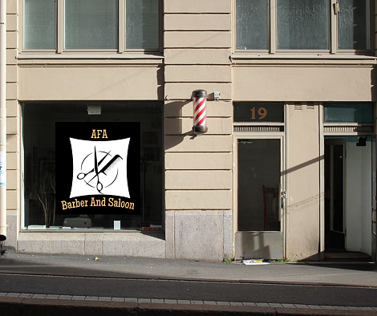

Location
Kota Bharu

Address
Jalan Bayam, 16150 Kota Bharu
Cutting Hours
OPEN DAILY: 6pm – 1am
No booking or appointment, first come first serve
Background of the shop
AFA barber & Saloon located in Kota Bharu features soapstone countertops, vintage barber chairs from the 1960’s and barber stations handmade with naturally-sourced oak and cherry woods. The 1100 square foot shop design was inspired by 1950’s Italian Modernism. Cork flooring and walnut paneling bring a modern flair. A perfect environment for a perfect haircut. Adjoining the barber stations is Butler Bakeshop serving delicious pastries and coffee from Intelligentsia. There is also a newsstand carrying magazines and art books curated by Import News.
Services
Haircuts, Buzz Cuts, Children's Haircuts, Back & Sides Trim, Beard Trims, Straight Razor Shaves, Men's Facials, The Hangover Treatment